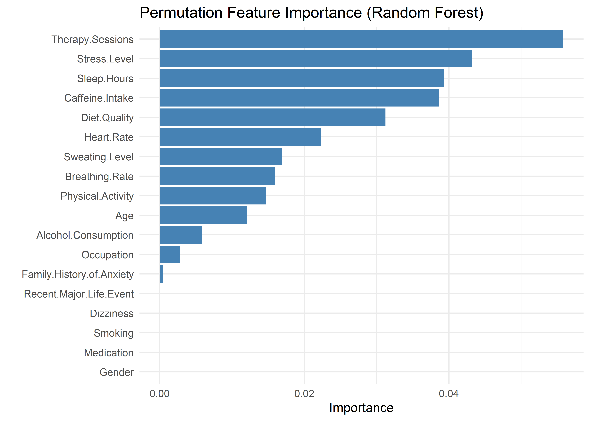

Low/Moderate Anxiety High Anxiety
9986 1014 Predicting Low / Moderate vs High Anxiety
Overview
As our primary modeling goal is interpretation, logistic regression is a natural choice. It offers a balance between statistical rigor and interpretability, allowing us to quantify the direction and strength of associations between predictors and the probability of high anxiety.
Our exploratory data analysis revealed distinct behavioral patterns between the two outcome groups — Low/Moderate Anxiety vs High Anxiety — suggesting that a logistic regression model should be capable of capturing meaningful signal from the predictors.
Before fitting the model, we assessed the distribution of the binary outcome. The result indicated a substantial class imbalance, with approximately a 10:1 ratio favoring the Low/Moderate Anxiety group. Despite this, the minority class (High Anxiety) includes over 1,000 observations — a sufficient sample size for modeling, especially given our focus on estimation rather than classification performance.
While class imbalance often warrants consideration of remedies such as class weighting or resampling (e.g., SMOTE, undersampling), these approaches come with notable trade-offs. Weighted models complicate coefficient interpretation by altering the meaning of the estimated log-odds, while resampling distorts the natural prevalence of the outcome — a key feature when the goal is to understand real-world data as it is, not as it might be under synthetic balance.
Because our objective is to understand the relationship between predictors and the likelihood of high anxiety in the real population, we deliberately avoid rebalancing techniques. Instead, we proceed with a standard logistic regression model, relying on its capacity to yield interpretable and statistically sound insights, even in the presence of imbalance.
Model Selection
Parsimonious, Importance-Driven Model
We computed permutation-based feature importance using a random forest. A clear inflection point in the importance rankings suggests that the top five variables—Therapy Sessions, Stress Level, Sleep Hours, Caffeine Intake, and Diet Quality—form a distinct group, contributing substantially more predictive information than the remaining features. This observation, paired with the common rule-of-thumb of limiting logistic models to ~5 predictors to avoid overfitting, motivated our choice to begin with this compact set.

While additional variables may be considered later, this starting point balances statistical rigor, model stability, and interpretability. All subsequent decisions are guided by model comparison statistics and the overarching goal of building a transparent and communicable model.
AnxietyBinary ~ Therapy.Sessions + Stress.Level + Sleep.Hours +
Caffeine.Intake + Diet.QualityTo test whether each predictor in the initial model contributes meaningfully to model fit, we conducted a series of single-variable removal tests. For each test, a simplified model was created by dropping one predictor, then compared to the five-variable model using AIC, BIC, and Bayes Factors. This approach helps identify variables that may be redundant or contribute minimal added value relative to the model’s complexity.
The results (shown below) indicate that removing any one of the five predictors leads to a notably worse-fitting model across all criteria. In each case, BIC increases and the corresponding Bayes Factor favors the full model, suggesting that each variable provides unique explanatory signal. These findings support retaining all five predictors in the base model.
Therapy Sessions: aic bic bayes.factor p
simplified_model 1155.404 1191.933 0.000000e+00 <2e-16
initial_model 581.382 625.216 1.150797e+123 Stress Level: aic bic bayes.factor p
simplified_model 824.232 860.760 0.000000e+00 <2e-16
initial_model 581.382 625.216 1.405521e+51 Sleep Hours: aic bic bayes.factor p
simplified_model 1287.966 1324.494 0.000000e+00 <2e-16
initial_model 581.382 625.216 7.019365e+151 Caffeine Intake: aic bic bayes.factor p
simplified_model 720.781 757.309 0.000000e+00 <2e-16
initial_model 581.382 625.216 4.826904e+28 Diet Quality: aic bic bayes.factor p
simplified_model 704.694 741.222 0.000000e+00 <2e-16
initial_model 581.382 625.216 1.550702e+25 We next tested whether additional predictors, ranked by permutation importance, meaningfully improved model fit. Each was tentatively added in sequence, with comparisons based on AIC, BIC, and Bayes Factors.
Heart Rate, Sweating Level, Breathing Rate, Physical Activity, and Age all improved fit and were retained. Alcohol Consumption did not—BIC increased, and the Bayes Factor favored the simpler model—so no further variables were added.
The resulting model includes all predictors supported by importance rankings and model comparison statistics, without incorporating variables of negligible value.
Heart Rate
aic bic bayes.factor p
no_heart_rate 581.382 625.216 0 <2e-16
heart_rate_added 536.020 587.160 183547794 aic bic bayes.factor p
heart_rate_added 536.020 587.16 0 <2e-16
sweating_added 492.385 550.83 77427673 aic bic bayes.factor p
sweating_added 492.385 550.830 0.008 <2e-16
breathing_added 475.327 541.078 131.140 aic bic bayes.factor p
breathing_added 475.327 541.078 0.000000e+00 <2e-16
activity_added 381.729 454.786 5.470769e+18 aic bic bayes.factor p
activity_added 381.729 454.786 0.006 <2e-16
age_added 364.269 444.631 160.329 aic bic bayes.factor p
age_added 364.269 444.631 31.559 0.121
alcohol_added 363.867 451.535 0.032 AnxietyBinary ~ Therapy.Sessions + Stress.Level + Sleep.Hours +
Caffeine.Intake + Diet.Quality + Heart.Rate + Sweating.Level +
Breathing.Rate + Physical.Activity + AgeTo compare our manual approach against a traditional model selection method, we ran a stepwise selection procedure using AIC. The process began with the initial five-variable model and evaluated additions and removals based on AIC improvements.
AnxietyBinary ~ Therapy.Sessions + Stress.Level + Sleep.Hours +
Caffeine.Intake + Diet.Quality + Physical.Activity + Sweating.Level +
Heart.Rate + Age + Breathing.Rate + Alcohol.ConsumptionThe stepwise procedure yielded a model nearly identical to the one selected manually—differing only by the inclusion of Alcohol Consumption, which our manual process excluded due to weaker model comparison support. This convergence supports the robustness of the manually selected model.
Selecting a Model
To compare candidate models, we evaluated their discriminative performance using the Area Under the ROC Curve (AUC). AUC offers a single, interpretable measure of how well a model distinguishes between high and low/moderate anxiety cases, and is a pragmatic way to navigate model decision overload when all candidates appear strong. In our analysis, every model — from the initial five-variable additive model to the fully extended version — achieved AUCs exceeding 0.998.
This uniformly high performance presented a practical dilemma: when every model performs exceptionally, how do we choose?
While AUC differences were numerically small (e.g., +0.0005 from importance-based five-variable model to full model with all variables), they underscore a broader tradeoff. The models offering slight performance gains did so at the cost of complexity and interpretability. AUC does not reflect:
Calibration — whether predicted probabilities match actual outcomes.
Local fit — whether the model performs equally well across different subgroups.
Explanatory clarity — whether stakeholders can make sense of the results.
We used AUC as a pragmatic filter, not a final arbiter. Its role was to flag when a model’s added complexity didn’t meaningfully improve performance, so we could focus on models that were both accurate and communicable. As such, we selected the importance-guided five-variable model for its balance of clarity and explanatory power — simple enough to interpret easily, yet robust enough to capture the key signals in the data.
Diagnostics
With our model selected, we now assess its diagnostics to ensure the assumptions of logistic regression are reasonably satisfied and that the results are stable and interpretable. This section is organized around three core pillars of diagnostic evaluation:
- Outlier analysis, which helps identify individual observations that may unduly influence model estimates or mask broader patterns.
- Structural assumption checks, including linearity, additivity (no interaction terms), and multicollinearity, which apply on the logit scale and ensure the model’s functional form remains appropriate.
- Calibration assessment, which verifies that predicted probabilities align with observed outcome frequencies and that the model performs as a reliable estimator.
Outlier Detection
Given the large sample size (~11,000 observations), the presence of outliers is statistically expected. However, certain outliers can have a disproportionate impact on model interpretation and parameter estimates.
To explore this possibility, we generated four diagnostic plots aimed at visually identifying potentially problematic points.
The four plots include:
Leverage vs. Cook’s Distance — highlights points that are both extreme in predictor space and exert strong global influence.
Linear Predictor vs. Pearson Residuals — assesses model fit and potential non-linearity across the logit scale.
Leverage vs. Pearson Residuals — identifies poorly fitted observations that may reside in sparse regions of the predictor space.
Cook’s Distance by Observation Index — detects globally influential observations without reference to specific predictors.
Note: Labels were added heuristically, prioritizing points with the most extreme values while minimizing overlap to preserve readability. These labels are illustrative and do not represent an exhaustive set of outliers.
We highlight two key groups:
Points 10306, 2112, and 3963 These cases have large Pearson residuals but low leverage—meaning they aren’t unusual in terms of predictor values but are still mispredicted. All were labeled as “Low/Moderate Anxiety” but predicted as “High Anxiety,” likely due to high stress levels (9–10) and low therapy engagement (0–3 sessions/month). These seem like plausible edge cases, not data errors.
Points 10699, 6037, and 4214 These cases have high leverage and high Cook’s Distance but low residuals—suggesting that, despite being in sparse regions of the predictor space, the model predicted them reasonably well. Their predicted probabilities hover near the decision threshold (0.29 for 6037 and 0.5 for 10699 and 4214), which reflects some model uncertainty and aligns with their unusual combinations of predictors.
While manual inspection is helpful, it’s not feasible to review every flagged case. Instead, we systematically selected the top 30 observations using the following criteria:
Absolute Pearson residual > 2
Cook’s Distance > 4 / n
Ranked by Cook’s Distance, prioritizing the most influential cases
These 30 observations were reviewed for unusual predictor combinations. Some notable patterns included:
High anxiety despite good diet quality and/or low caffeine intake
High stress levels paired with low anxiety
While these combinations are rare, they’re not implausible. Excluding them would risk modeling an oversimplified—and potentially biased—version of reality that ignores meaningful edge cases.
To evaluate the impact of these outliers, we fit a trimmed model that excludes the top 30 most influential observations identified in the previous step.
Term Full_Model Trimmed_Model Ratio
(Intercept) (Intercept) -1.26910159 0.14336484 -0.1129656
Therapy.Sessions Therapy.Sessions 1.07122435 1.71925991 1.6049485
Stress.Level Stress.Level 0.86483626 1.15320397 1.3334362
Sleep.Hours Sleep.Hours -2.59648631 -4.12710413 1.5894958
Caffeine.Intake Caffeine.Intake 0.01058238 0.01643301 1.5528658
Diet.Quality Diet.Quality -0.55648236 -0.89431778 1.6070910Model trained with Full Data: 0.998 AUCModel trained with Trimmed Data: 0.9997 AUC (Trimmed Dataset)Model trained with Trimmed Data: 0.9979 AUC (Full Dataset)The trimmed model preserves the direction of all coefficients, but their magnitudes increase by roughly 1.5×, consistent with the model being fit on less variable data. In linear regression, this kind of inflation might suggest overfitting or instability. In logistic regression, though, it typically reflects increased confidence in predictions rather than a meaningful gain in accuracy.
In terms of predictive performance, the difference is negligible. The trimmed model performs nearly perfectly on the reduced dataset—but that’s expected and uninformative, since the most influential points were removed. When evaluated on the full dataset—a more honest test—its AUC drops by just 0.0001. This suggests that, while the trimmed model has more extreme coefficients, it doesn’t improve performance and may even generalize slightly worse.
Given our goal of modeling real-world data, we choose to retain the model trained on the full dataset. It better captures natural variability and avoids excluding rare but plausible observations that might otherwise be misrepresented or lost.
Linearity
The linearity plots show slight “S-shaped” curves for Diet Quality, Caffeine Intake, and Stress Level, suggesting mild nonlinearity near the extremes. These deviations appear subtle and are unlikely to meaningfully affect model performance. In contrast, Therapy Sessions and Sleep Hours show more pronounced curvature at higher log-odds, indicating a clearer violation of the linearity assumption. Interestingly, both exhibit patterns that resemble bimodal behavior, which may suggest that the model is underestimating their effects—possibly due to hidden structure or interaction effects. Rather than applying transformations prematurely, we next examine the additivity assumption to see whether interactions might explain these patterns.

Additivity
To test whether any interaction terms improve model fit, we use a likelihood ratio test comparing the additive model to one with all 2-way interactions. This is preferable to AIC or BIC here, since a few strong interactions could be obscured by others that slightly worsen fit. The LRT directly tests whether any interaction term adds value overall.
The likelihood ratio test shows that at least one interaction significantly improves model fit (p < 0.001), suggesting a violation of the additivity assumption and supporting the presence of interaction effects.
Analysis of Deviance Table
Model 1: AnxietyBinary ~ Sleep.Hours + Therapy.Sessions + Diet.Quality +
Stress.Level + Caffeine.Intake
Model 2: AnxietyBinary ~ (Sleep.Hours + Therapy.Sessions + Diet.Quality +
Stress.Level + Caffeine.Intake)^2
Resid. Df Resid. Dev Df Deviance Pr(>Chi)
1 10994 569.38
2 10984 518.88 10 50.503 2.156e-07 ***
---
Signif. codes: 0 '***' 0.001 '**' 0.01 '*' 0.05 '.' 0.1 ' ' 1Now that we know interaction terms collectively improve model fit, we use information criteria (AIC, BIC, and Bayes Factors) to identify which specific 2-way interactions are most supported. This shifts our focus from formal testing to model selection, prioritizing parsimony and interpretability.
While some interaction models showed moderate Bayes Factors (e.g., BF ≈ 5) and small BIC improvements (ΔBIC < 4), these results should be interpreted with caution given the large sample size (~11,000). At this scale, even minor departures from additivity can appear statistically significant without providing meaningful gains in interpretability or explanatory value.
Still, while each interaction term shows only modest support on its own, their combined effect may be more substantial. Notably, interactions between Therapy Sessions and Diet Quality, Sleep Hours and Therapy Sessions, and Sleep Hours and Diet Quality each showed mild support when tested individually.
The three selected interaction terms form a natural set, suggesting that together they may capture a more coherent structure in the data. To evaluate this, let’s fit a model including all three pairwise interactions.
The interaction model is statistically superior by several criteria. Compared to the additive model, it improves fit substantially with ΔBIC = 14 and Bayes Factor ≈ 990. This is strong evidence that interaction terms — such as between Sleep Hours and Therapy Sessions, or Diet Quality and Sleep — explain meaningful variance in anxiety risk.
aic bic bayes.factor p
additive_model 581.382 625.216 0.001 <2e-16
interaction_model 545.670 611.421 989.776 However, our primary aim is not to build a perfect predictor. Instead, we seek a model that is:
- Clear enough to communicate results to a broad audience,
- Parsimonious enough to remain stable and generalizable, and
- Transparent enough to identify key relationships.
The additive model is deliberately oversimplified. It ignores subtle but real interdependencies between predictors. As a result, it cannot capture context-dependent effects — for instance, how the impact of poor diet might vary depending on sleep quality or therapy engagement.
Despite these limitations, the additive model has advantages:
- Its structure is straightforward, allowing direct interpretation of individual predictors.
- It facilitates communication with stakeholders unfamiliar with nonlinear or interaction-heavy models.
- Its predictions are nearly as accurate (AUC 0.9980 vs 0.9985) despite being simpler.
Additive model AUC: 0.998 Interaction model AUC: 0.9985 To address this tradeoff, we retain the additive model for our primary analysis, while:
- Exploring key interactions in a supplementary section, and
- Encouraging future work to consider more complex models where interpretability is not paramount.
In short: this model is not a perfect mirror of the data — but it’s a deliberately polished lens, tuned to clarify rather than to capture every nuance.
Although we ultimately favored the additive model for its simplicity and interpretability, visualizing the interactions still reveals meaningful structure that may inform future research or support domain understanding.
- Sleep Hours consistently exhibits a negative association with log-odds of high anxiety. This negative slope becomes more pronounced when both Therapy Sessions and Diet Quality are low, suggesting that adequate sleep is especially protective in less supportive therapeutic and nutritional contexts.
- Therapy Sessions typically show a mild positive slope, but this flattens or reverses (to slightly negative) under conditions of high Diet Quality and sufficient Sleep, implying that therapy’s marginal contribution may diminish when other protective factors are present.
- Diet Quality demonstrates context-dependent directionality: its slope is positive when Sleep is high and Therapy is low, but negative when Therapy is high and Sleep is low. This may point to a compensatory dynamic: when sleep or therapy are lacking, diet becomes more predictive, but when both are already sufficient, its marginal effect lessens—or even reverses.
While these patterns aren’t strong enough to justify including interaction terms for performance, they may reflect underlying compensatory or synergistic effects between lifestyle variables. Visualizing these slopes adds interpretive nuance and may highlight thresholds or diminishing returns that are relevant for clinical or behavioral intervention.
No Multicollinearity
All predictors in the model have Variance Inflation Factors (VIFs) below 1.5—well under the common threshold of 5. This suggests that multicollinearity is not a concern, and that the predictors are sufficiently independent to yield stable, interpretable coefficients.
Variance Inflation Factors:Therapy.Sessions Stress.Level Sleep.Hours Caffeine.Intake
1.260667 1.087368 1.225833 1.100429
Diet.Quality
1.089014 Model Calibration
For a logistic regression model to be interpretable, its predicted probabilities must be well-calibrated—that is, a 90% prediction should correspond to the event occurring about 90% of the time. In a well-calibrated model, predicted probabilities closely track observed event rates across the range of predictions.
The following two plots visualize this calibration in complementary ways:
Fine-Grained Calibration Plot (200 quantile bins): Predictions are grouped into 200 equally sized bins. The closer each point falls to the diagonal line, the better the alignment between predicted and observed frequencies. Deviations indicate areas of under- or over-confidence.
Coarse Calibration Plot (5% fixed bins): Predictions are grouped into 5% intervals. Each point is labeled with its bin size, offering insight into the stability of the observed rates—smaller bins are more sensitive to noise.
Overall, the model’s predicted probabilities align closely with observed event rates—most points lie near the diagonal line, suggesting strong calibration. In the fine-grained plot, we see dense clusters near (0, 0) and (1, 1), and fewer points in the middle. This reflects a confident model: most predictions are close to 0 or 1, with few uncertain cases near 0.5. The coarser plot confirms this pattern and adds bin sizes, making it easier to assess the reliability of each point
A few notable patterns emerge:
Bins with small sample sizes (e.g., 9, 16, 18) show more deviation from the diagonal, likely due to sampling variability.
Several mid-range points lie slightly above the line, indicating the model tends to underestimate the probability of high anxiety in those regions.
In the low-probability region near (0, 0), the observed event rate is even lower than predicted, suggesting the model slightly overestimates risk in that range.
None of these deviations appear especially concerning—overall, the model’s predicted probabilities track observed rates well, supporting good calibration.
Final Model Summary
Diagnostic analyses indicate that the final logistic regression model is well-calibrated, interpretable, and robust to influential observations. Residual and outlier assessments revealed a small number of plausible edge cases with minimal impact on model stability. Linearity and additivity assumptions were largely satisfied, and while several interaction terms showed mild support, their inclusion yielded negligible gains in either performance or clarity. Calibration plots confirmed strong agreement between predicted and observed probabilities.
These results confirm that the model is well-suited for explanatory use — offering a stable, interpretable, and empirically justified foundation for communication and insight.
Interpreting the Final Model
Predictor Effects
Now that we’re confident in the quality of our model, let’s take a closer look at the logistic regression equation in terms of log-odds:
Call:
glm(formula = AnxietyBinary ~ Therapy.Sessions + Stress.Level +
Sleep.Hours + Caffeine.Intake + Diet.Quality, family = binomial(),
data = model_data)
Coefficients:
Estimate Std. Error z value Pr(>|z|)
(Intercept) -1.269102 1.078253 -1.177 0.239
Therapy.Sessions 1.071224 0.067108 15.963 <2e-16 ***
Stress.Level 0.864836 0.086795 9.964 <2e-16 ***
Sleep.Hours -2.596486 0.163356 -15.895 <2e-16 ***
Caffeine.Intake 0.010582 0.001045 10.123 <2e-16 ***
Diet.Quality -0.556482 0.060275 -9.232 <2e-16 ***
---
Signif. codes: 0 '***' 0.001 '**' 0.01 '*' 0.05 '.' 0.1 ' ' 1
(Dispersion parameter for binomial family taken to be 1)
Null deviance: 6766.25 on 10999 degrees of freedom
Residual deviance: 569.38 on 10994 degrees of freedom
AIC: 581.38
Number of Fisher Scoring iterations: 10We can express the model as:
\[ \begin{align*} \widehat{\log\left[\frac{P(\text{Anxiety} = \text{High Anxiety})}{1 - P(\text{Anxiety} = \text{High Anxiety})}\right]} =\ & -1.269 \\ &+ 1.071\ \cdot\ \text{Therapy Sessions} \\ &+ 0.865\ \cdot\ \text{Stress Level} \\ &- 2.596\ \cdot\ \text{Sleep Hours} \\ &+ 0.0106\ \cdot\ \text{Caffeine Intake} \\ &- 0.556\ \cdot\ \text{Diet Quality} \end{align*} \]
Let’s break down what each predictor means in terms of odds:
Each additional therapy session increases the odds by a factor of ×2.92, holding all other variables constant.
Each additional stress level increases the odds by a factor of ×2.37, holding all other variables constant.
Each additional hour of sleep decreases the odds by a factor of ×0.075 (or roughly ÷13.4), holding all other variables constant.
Each extra milligram of caffeine increases the odds slightly (×1.011). But people usually consume caffeine in cups of coffee (≈100 mg), so let’s adjust the scale into cups (100 mg). Then, one extra cup increases the odds by a factor of ×2.88 (holding all other variables constant) — a much more meaningful change.
Finally, an extra level of Diet Quality decreases the odds by a factor of ×0.573, holding all other variables constant.
Probability Perspective
While interpreting probabilities algebraically becomes more convoluted, we can still express the model in probabilistic form using the logistic (sigmoid) transformation: \[ \widehat{P(\text{Anxiety} = \text{High Anxiety})} = \dfrac{1}{1 + e^{-\left( -1.269 + 1.071\cdot\text{Therapy Sessions} + 0.865\cdot\text{Stress Level} - 2.596\cdot\text{Sleep Hours} + 0.0106\cdot\text{Caffeine Intake} - 0.556\cdot\text{Diet Quality} \right)}} \]
This sigmoid structure transforms a linear combination of predictors into a predicted probability between 0 and 1. However, when multiple predictors are involved, interpreting this formula — or visualizing individual effects — becomes substantially more complex. Predicted probabilities depend on the full combination of input values, meaning that visualizations can only capture local, conditional effects, not generalizable insights.
For this reason, we focus on interpreting the odds ratios, which offer a clearer and more direct understanding of each predictor’s influence, independent of arbitrary baselines. These effects — such as a 13-fold decrease in odds for each additional hour of sleep, or a near tripling of odds per extra therapy session — provide a strong and interpretable summary of the model’s core insights.
In summary, while logistic regression does support probabilistic interpretation, odds-based analysis offers the most accessible and robust framing for the purposes of this analysis.
Conclusion
This analysis set out to understand the factors most strongly associated with high anxiety. Using logistic regression, we developed a model that balances strong statistical performance with interpretive clarity — making it well-suited for transparent reporting and structured analysis of variable relationships.
While more complex models with interaction terms yielded modest improvements in fit, they introduced interpretive overhead. We therefore retained a simpler additive model, allowing for straightforward, stable insights. To enrich this view, we analyzed and visualized key interactions separately — highlighting conditional patterns that inform, but do not complicate, the core structure.
Diagnostic checks confirmed that the model is well-calibrated, resilient to outliers, and broadly stable. Though simplified by design, it offers a clear and defensible account of how behavioral and lifestyle factors relate to anxiety — and where deeper complexity begins to emerge.